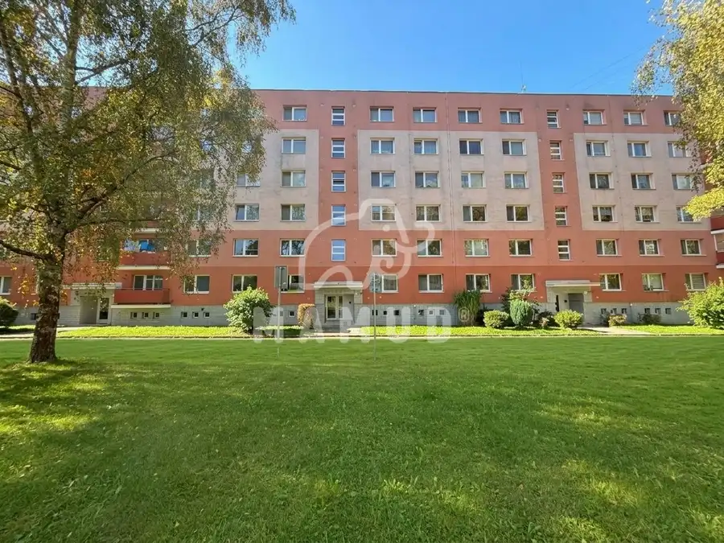
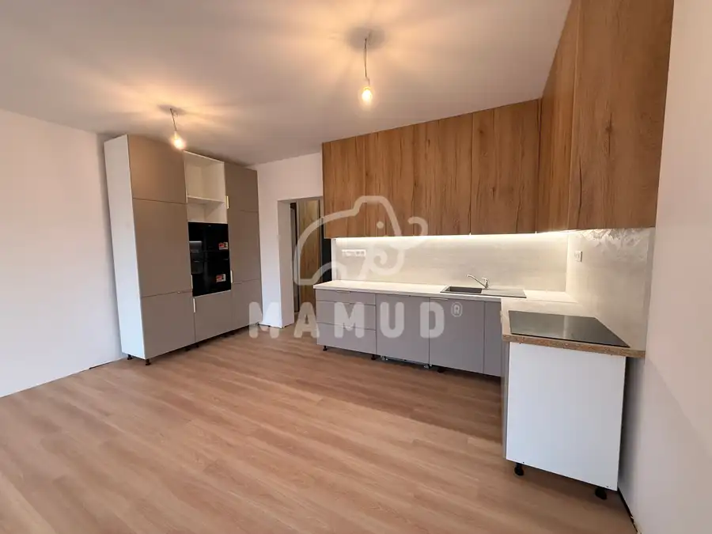
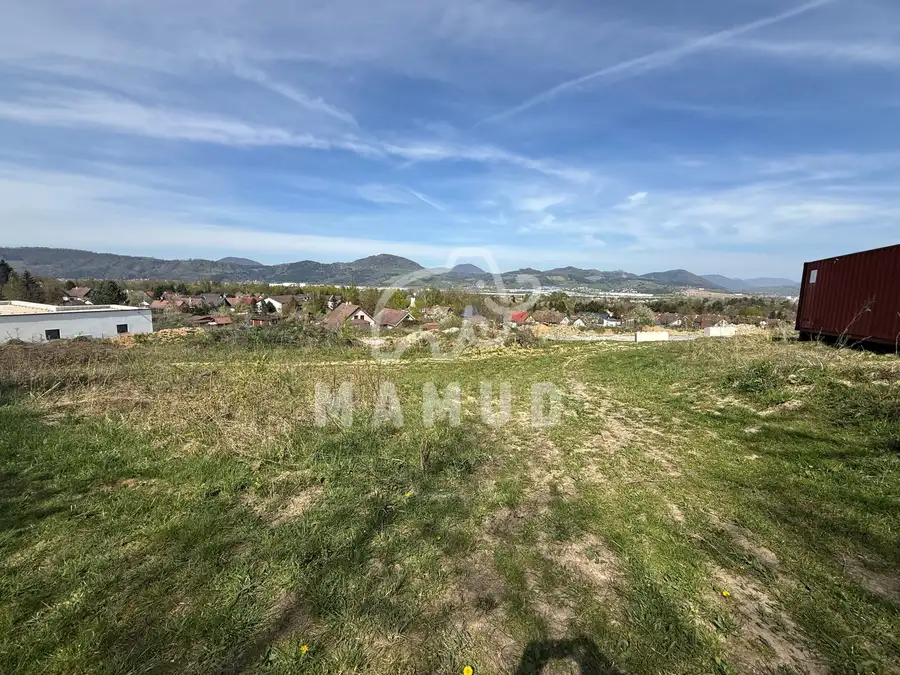

Slnečný stavebný pozemok 1335 m² - Hôrky (cca 17m x 73m)
Hôrky
- Plocha1335 m²
O nehnuteľnosti
Mamud reality ponúka výhradne na predaj stavebný pozemok s rozlohou 1335 m² (približne 17 m x 73 m) v zastavanej časti obce Hôrky. Táto lokalita je ideálna pre tých, ktorí hľadajú pokojné bývanie s výbornou dostupnosťou len 5 km od Žiliny. Pozemok sa nachádza mimo hlavnej cesty, čo zaručuje maximálne súkromie a ticho. Vďaka slnečnej orientácii si užijete dostatok prirodzeného svetla po celý deň. K pozemku vedie obecná asfaltová cesta, čo zabezpečuje pohodlný prístup. Inžinierske siete elektrika, obecný vodovod, plyn sú pri pozemku. Odpad je formou žumpy. Odporúčame vidieť túto nehnuteľnosť osobne a presvedčiť sa o jej potenciáli. Pre viac informácií a dohodnutie obhliadky kontaktujte Mamud reality: 0905 855 925, Email: mudry@mamud.sk . Poznámka: Rozmery na mape sú orientačné. Energetický certifikát k nehnuteľnosti nie je vyhotovený.
Parametre
| Druh | Pozemok pre rodinné domy |
|---|---|
| Dátum zverejnenia | 6. 10. 2026 |
| Dĺžka pozemku | 73 |
| Elektrina | Pri pozemku - 400 V |
| Odpadové vody | Nedostupné |
| Plocha pozemku | 1335 m² |
| Plyn | Pri pozemku |
| Pripravenosť k výstavbe | Predbežný súhlas |
| Prístupová komunikácia | Asfaltová |
| Terén pozemku | Mierne svahovitý |
| Typ | Predaj |
| Voda | Pri pozemku - Verejný vodovod |
| Šírka pozemku | 17 |
Kde to je


Mohlo by Vás zaujímať

BytNové2 173 000 €BYT 2+1, Žilina - Vlčince III, ul. Levočská, 63m², Balkón Žilina 2-izbový63 m²3. podlažie Realitná kancelária Mamud reality vám exkluzívne ponúka na predaj 2-izbový byt (typ 2+1) s výmerou 63 m². Byt sa nachádza na 3. poschodí zatepleného…
BytNové8 Cena dohodouPRENÁJOM BYTU 2+kk, Bytča, 64m², ul. Sakalová, Parkovanie Bytča 2-izbový75 m²2. podlažie Ponúkame na prenájom priestranný a slnečný byt typu 2+kk s balkónom v novostavbe na ulici Sakalová (časť Veľká Bytča). Ak hľadáte pokojné bývanie s…
PozemokNové4 Cena dohodouSlnečný stavebný pozemok 623 m² - Mojšová Lúčka (17m x 39m) Žilina 623 m² Mamud reality ponúka výhradne na predaj stavebný pozemok s rozlohou 623 m² (približne 17 m x 39 m) na okraji obce Mojšová Lúčka. Táto lokalita je…